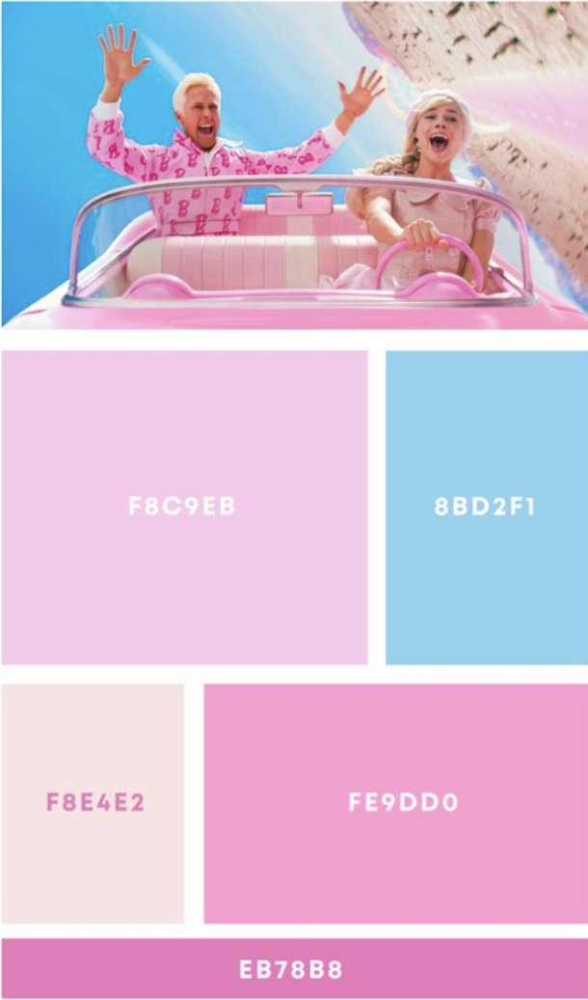

For Lab 6, I created a hometown map and embedded it into my portfolio page. I styled the basemap to match my portfolio aesthetic, added custom markers and points of interest using a CSV file, and used a Python script to generate and troubleshoot the map. I made cartographic decisions about clutter, zoom levels, line weight, labels, and terrain, and documented both design and technical choices throughout the process.
Reflection
My basemap design was inspired by the Barbie movie, specificaly the bright, playful aesthetic and the incorporation of pink. I found a Barbie-inspired color palette that matched my vibe and also fit the look of my portfolio, and then incorporated those colors into the map by making the featured styled and aesthetic instead of realistic. I really wanted to keep my map fun and cohesive because I think that reflects my personality more than if I were to make a typical map.

The biggest cartographic challenge was figuring out how to edit the features correctly to maintain the style and aesthetics of my map while still being functional. I quickly realizd that when the map was zoomed out, too many features made the map look cluttered and distracted from the aesthetic. Because of this, I simplified the features by making them appear when zoomed in. I prioritized highlighting the large visual like land and water while zoomed out on the map and avoided extra details. As the user zooms in, they can see the details like the roads and smaller cities. I also wanted to make the line weight thinner so the map maintained aesthetic and not overwhelming.
Terrain was also a big challenge for me. I couldn’t find a terrain visualization layer in the normal layers or components area, and the only terrain option I found was in the global section as 3D terrain. I enabled it and was able to reflect the terrain on my map; however, I am still unsure if that is different from the hillshade and contour terrain component. This caused me to make a judgment call and document it honestly as part of my design process.
Technically, the hardest part was building and troubleshooting my CSV file and Python script. I ran into many issues with my CSV. I troubleshooted my file formatting for awhile and finally figured it out. I also had an issue with formatting and encoding at the end when I previewed my final map. It was showing weird symbols which quickly made me realize that I cannot use ‘ in contractions. I went through and made these edits and it fixed that problem. I used ChatGPT throughout to help me write my code, debug any issues I came across, and fix my CSV so it could be read correctly. I also used it to put my own personal touch on my map by adding heart markers instead of the typical map location icon. ChatGPT helped me a lot in this process, not only to help write the code by to help me troubleshoot and issues I came across. This allowed me to move through this lab quicker than if I were to troubleshoot this fully on my own.